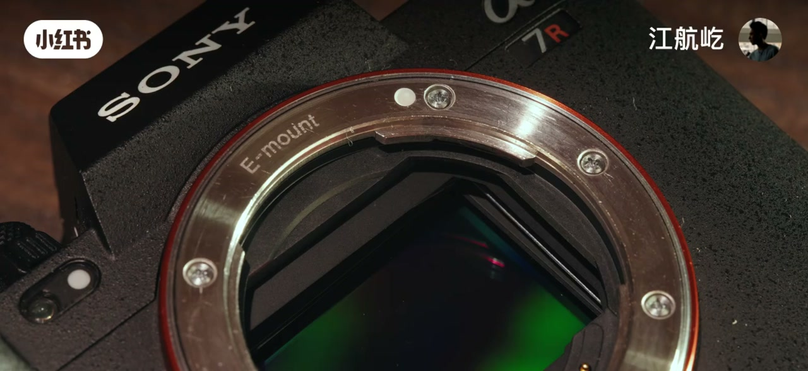
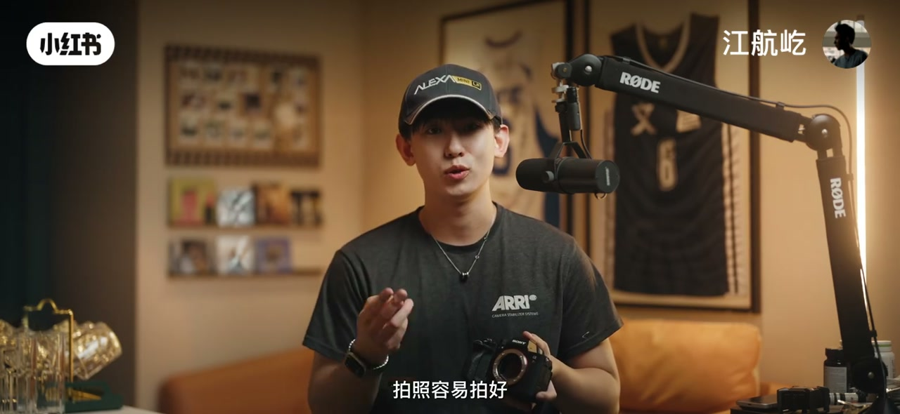
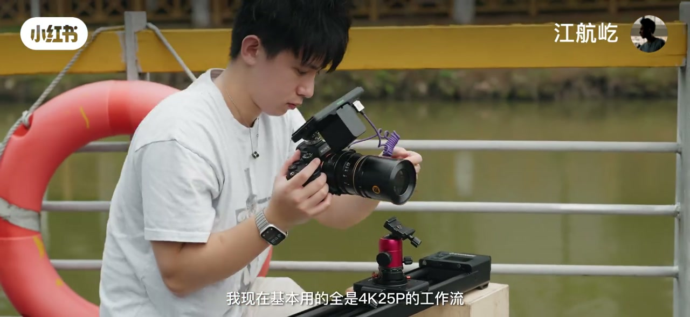
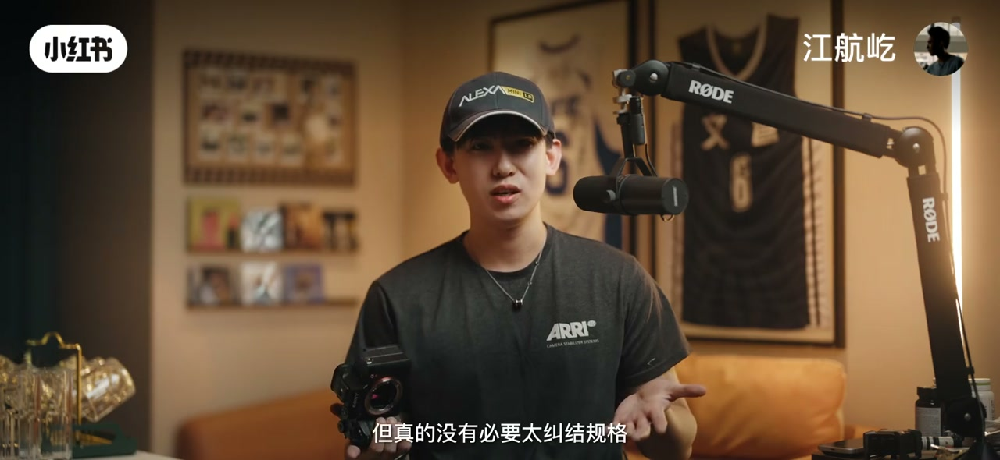
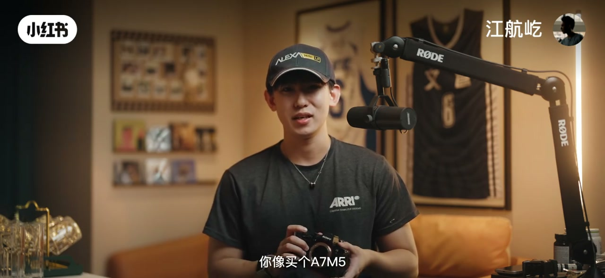

内容要点
江航屹闲聊「普通玩家最值得入手的相机」：镜头规格越卷越像飞思中画幅，但真正日常能感知的优势其实不多。他的立场很明确——现在对普通玩家最值得买的是索尼 A7R5；钱应该砸在拍照用得上、握持看得舒服的地方，而不是堆栈、8K、极限连拍这类用得少的数字。
知识结构
规格焦虑制造「没堆栈就低人三等」；字幕直接亮底牌：A7R5 才是普通玩家当下最优解。
6100 万像素把水桶机拉开代差；从 A7R5 裁出约 A6700 像素量级都能顶住 Z6 III；普通玩家仍以拍照为主。
出片率、哈苏同款裁切、后期二次构图；千元档镜头解析力已够用。样片：A7R5+50GM、A7R5+唯卓仕 20mm。
「连拍慢、果冻大」被说烂，作者用了两年几乎看不出；日常 4K25，也没人说视频卡。
少买冷门功能；优先优秀 EVF 与更好屏幕；冲 A7M5 却无远摄/鸟拍/连拍刚需会很难受。
普通玩家别为用不上的规格买单；A7R5 的高像素与拍照体验才是更划算的投入方向。
00:00-00:42开场定调：A7R5 才是普通玩家最优解
视频开头先吐槽：最近新出的镜头一套接一套，规格比飞思中画幅还复杂。贵重性能堆在纸面上，平时真用得上吗？在口播尚未完全被 Whisper 抓到的前半分钟，画面字幕已经把结论写死——「A7R5 就是现在对于普通玩家最值得买的相机」。
接着他点名行业焦虑：只要传感器没带个堆栈，仿佛就低人三等。这一段不是在帮堆栈机站台，而是把「规格 FOMO」摆到台面上，后面再用拍照场景拆掉它。
00:42-01:206100万像素：真正用得上的一点
作者说用得上的「就一点」：6100 万像素。索尼曾经的当家传感器，已经和水桶机起码拉开身位差距。什么概念？从 A7R5 里「扣」出一台 A6700 的像素量，都能顶一个 Z6 III。
他也判断：普通玩家买相机还是用来拍照比较多；天天拿来拍 8K 视频那种优势，未必是日常最容易感知的部分。换句话说，参数表里最吵的未必是你真正会碰到的。


01:20-02:05拍照向收益：裁切、构图与千元镜
中间一大段口播 Whisper 有空洞，但样片字幕把论证补齐了：我们也都不是什么摄影大师，更在意出片率；高像素能很轻易拿到网上很火的那种「哈苏同款裁切」；尤其在后期二次构图时，像素余量就是容错。
画面给出两张明确标注的样片：A7R5 + 索尼 50mm F1.2 GM 的河景裁切感；A7R5 + 唯卓仕 20mm F2.8 EVO 的人像楼梯场景。他还强调，即便千元档镜头，现在也都有非常极致的解析力——矛头再次指向「别只为机身堆栈数字买单」。
02:05-03:10连拍慢、果冻大：用得少就别焦虑
对水桶机常见槽点「连拍慢、果冻大」，作者用两年体感硬刚：夜景球场样片配字幕说，用了两年也确实看不出这个果冻体现在哪。他自己高速连拍的比例，甚至和「陈忠祥拍单张」的比例有得一拼——意思是连拍功能对他并不构成日常刚需。
视频工作流上也同样冷静：基本还是 4K25，也没人说视频卡。那么纠结于数字规格干啥？

03:10-03:42钱花在能感知的地方
观点收束很干脆：不要花钱买平时用得不多的功能；有这钱，好好投资平时能用到、能感知到的东西——比如非常优秀的 EVF，还有更好的屏幕，会让你用起来更舒服。
他理解「可以不用，但不能没有」的心理，但仍然劝：没必要太纠结规格，用得不多的功能就省点钱。结尾举例：你想冲一台 A7M5，却没有远摄镜头、鸟拍挡、连拍这类刚需场景，反而会很难受——身体验要配真实用法，而不是参数清单。


详细文字转录
以下内容按 Whisper 原始分段呈现并做术语校正；前半与中段存在口播空洞，关键结论已对照画面字幕补全到正文，转录区不臆造缺失片段。
-
最近没啥新出的镜头啊
-
一套接一套的规格
-
比飞思中画幅还要复杂
-
这些价钱我们去买的这些性能
-
这些规格
-
平时用用我们真的能用得上吗
-
我说用得上的
-
就一点
-
6100万像素
-
索尼曾经的当家传感器
-
就已经和所有的水桶机
-
都起码拉开身位差距了
-
什么概念呢
-
从A7R5里
-
扣出一台 A6700的像素量
-
都能顶一个Z6 III
-
那我相信咱普通玩家买相机
-
还是用来拍照比较多的
-
比如说天天拿来拍8K的肉视频的
-
就是最容易感知到的优势
-
平时基本也不怎么会用得到
-
那么纠结于数字规格干啥
-
我现在基本用的还是
-
4K25的工作流
-
也没人说我的视频卡啊
-
所以我的观点还是一样
-
不要花钱买你平时用的不多的功能
-
有这钱
-
好好投资你平时能用到的
-
能感知到的
-
就像这个非常优秀的EVF
-
还有更好的屏幕
-
就是会让你觉得
-
在使用中会更加舒服
-
虽然我理解
-
我可以不用
-
但是不能没有的道理
-
但真的没有必要太纠结规格
-
用的不多的功能就省点钱
-
你想买个A7M5
-
没有远摄镜头
-
鸟拍挡连拍
-
这多难受